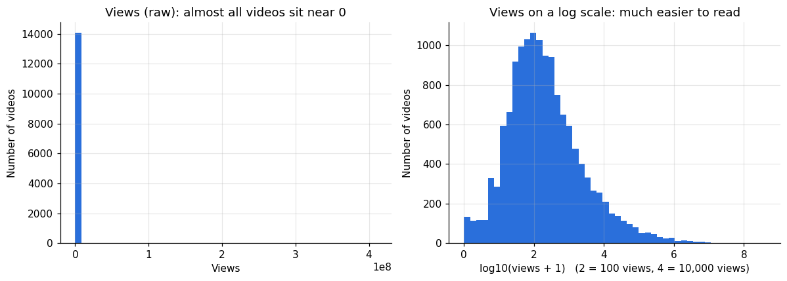
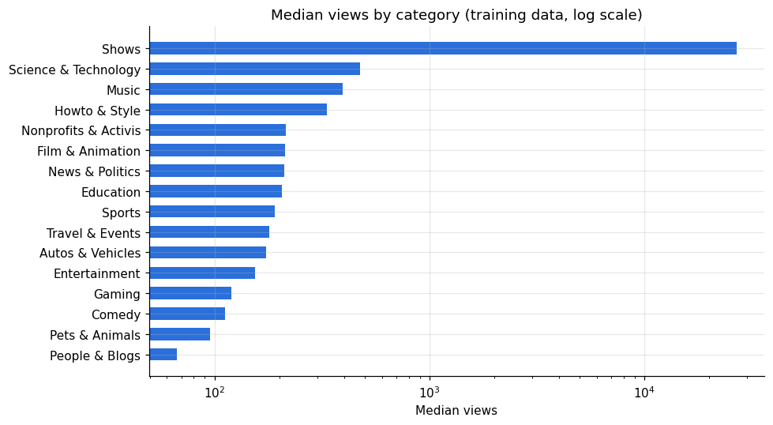
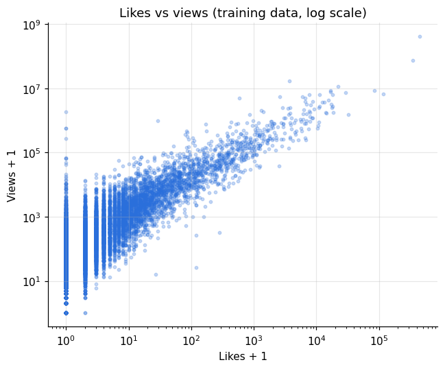
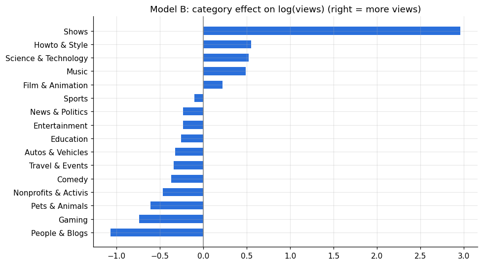

Regression analysis · 17,589 videos · 16 categories
Can you predict YouTube views before a video goes live?
I used linear regression on 17,589 YouTube videos to see which factors go with more views, and whether the information you have before uploading is enough to predict them.
Short answer: not with this data. Likes explain views well (69% of the variation), but likes only exist after a video is published. Using only before-upload information (category, length, resolution), the model was barely better than guessing the median.
Results on test videos
I split the data first: 80% of videos to build the models, 20% held back to test them. All scores below are on the 3,518 test videos the models never saw.
| Model | R² (log views) | Error vs baseline | Within 2x of real views |
|---|---|---|---|
| Baseline: guess the median | -0.02 | 0% | 24% |
| Model A: category, length, resolution, likes, comments | 0.69 | -43% | 40% |
| Model B: category, length, resolution only | 0.11 | -6% | 25% |
R² = share of the ups and downs in views the model explains (0 = no better than a flat guess, 1 = perfect). Error vs baseline = how much smaller the average error is than just guessing the median. Within 2x = share of test videos where the prediction was between half and double the real views.
What I found
- Likes are by far the strongest factor. Roughly, 10% more likes goes with about 12% more views. But this is a link, not cause and effect: popular videos get both more views and more likes.
- Before-upload information alone predicts views poorly. Category matters somewhat. Length and resolution matter very little.
- Most videos get very few views. The median video has about 150 views, but the average is about 69,000, because a handful of viral videos pull it up. That is why the models predict log(views) instead of raw views.
- To predict views before publishing, you would need different data, such as channel size, title, thumbnail and upload time.
Charts

Raw views are extremely skewed: almost all videos sit near zero. On a log scale the shape is much closer to a bell curve, which suits linear regression.

Music and Science & Technology videos get more views than People & Blogs. "Shows" looks very high, but it has only 12 videos in the training data, so that number is not reliable.

Likes and views move together very closely (correlation 0.82 on a log scale). This is why Model A scores so much higher than Model B.

In Model B, category is the most useful before-upload factor, but even together with length and resolution it explains only 11% of the variation.
Limitations
- Likes and views were recorded at the same time, so Model A shows a strong link, not cause and effect.
- Some categories have very few videos, so their results are not reliable.
- This is one snapshot of videos, not views tracked over time.
- The dataset has no channel size, upload date, title quality or thumbnail information.
About this project
I first did this project in Excel, then rebuilt it in Python to make each step clearer and testable:
- Data check: loaded 17,589 videos and checked for missing values, zero-view videos and extreme values.
- Fair testing: split the data 80/20 before any analysis, so the test videos were only used for final scoring.
- Models: built a median baseline and two linear regression models, one with likes and comments and one with only before-upload information.
- Evaluation: compared models with R², average error and a plain "within 2x" score, and read the coefficients in plain language.
Tools: Python (pandas, NumPy, scikit-learn, Matplotlib), Jupyter, Git, GitHub Pages. See the full notebook on GitHub.